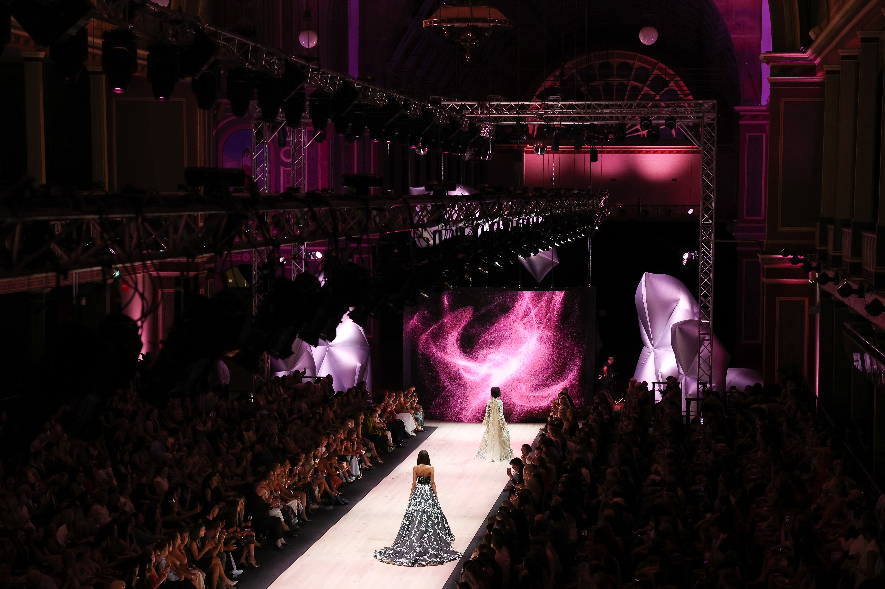

Do we need a live system or rendered video?
Rendered sequences suit a defined playback programme. A real-time system is relevant when the image needs to respond to live audio or other input. The choice depends on the experience and the AV setup.
Commissioned work
Moving-image sequences and responsive visual systems for runway screens, album listening sessions, launches and cultural events. Minnie Park develops visual direction and media that respond to the project’s sound, screen format and setting.

For the 2025 PayPal Melbourne Fashion Festival Premium Runways, Park produced sixteen moving-image sequences developed from Meta Rose. For XIA’s Gravity album listening session (2026), she created a thirty-minute audio-reactive visual system. These are separate commissions with different presentation conditions and deliverables.
See Melbourne Fashion Festival ↗Include the event format and date, screen dimensions and pixel resolution, required duration, music or audio inputs, playback system, content rights, review schedule and budget range.
Following the initial brief, scope, deliverables, technical responsibilities, schedule and usage are agreed before production begins.
Rendered sequences suit a defined playback programme. A real-time system is relevant when the image needs to respond to live audio or other input. The choice depends on the experience and the AV setup.
The screen’s resolution, aspect ratio, mapping and playback specifications should be confirmed with the AV supplier before final production.
Usage period, presentation sites, online use, exclusivity and later adaptations are agreed as part of the commission. A new project should not assume unrestricted reuse of an existing artwork.